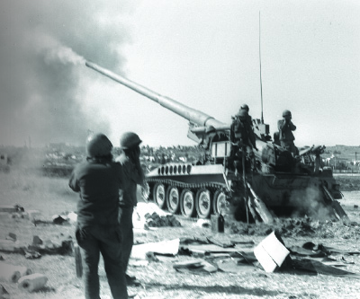

A Chassid Under Fire on the Front Lines
“The Chassidishe chinuch I received, and the hope and trust in Hashem that I brought with me as a Chassid, helped raise spirits on the front lines.” * A beloved Chassid who fought valiantly against the Egyptians, who, despite his army issued olive green fatigues, stood out as a Chassid and saved the lives of many soldiers. No wonder the commander refused to release him despite the order received from above. * Stories and memories about the Chassid, R’ Meir Freiman a”h, who fought in the Yom Kippur War.
A CHASSID GOES TO THE FRONT

R’ Meir didn’t wait for military transport to take him. He drove his car southward in order to locate his unit. He took along a volume of Shulchan Aruch HaRav with the Laws of Sukka.
“I was terrified while driving from Kfar Chabad to the base and then on the long way till the Sinai. Without going into dramatic descriptions, suffice it to say that this looked like a real war. Although this was my first experience with combat, I knew that war is no child’s play. Suddenly, everything the Rebbe said in the previous months began to take on added significance.
“When the Rebbe began to quote, ‘out of the mouths of babes and sucklings have You ordained strength,’ with great emphasis on the conclusion, ‘to silence the foe and the avenger,’ nobody knew what he was referring to. Today, when the topics of ‘peace and war’ are in the news and the security situation is constantly discussed, it’s hard to understand how different the situation was back then. It was so peaceful; everyone felt calm and secure, even complacent, after the victory of the Six Day War. Nobody gave a thought to war.
“When word reached Eretz Yisroel that the Rebbe said to gather the children and say T’hillim with them, and that he even told the children to say l’chaim, it became the talk of the day among the Chassidim. Everyone spoke about this unusual event. Nobody knew anything beyond the fact that these were Balshemske doings.
“Now, on my way to war, it was all suddenly frighteningly clear.”
Many hours later, R’ Meir was sitting behind the wheel of a tank in the armored division which fought in the sand dunes of the Sinai desert and waged bitter rearguard battles. On this burning front, under fire, R’ Meir was a loyal soldier who coolly did everything he had to do. His job was to drive his tank and to skillfully guide it between the treacherous sand dunes, as he and his fellow crew members sat for days on end crammed inside a lump of moving steel.
Along with being a soldier like thousands of others, R’ Meir stood out with his warm Chassidic presence. His spiritual and Chassidic stature shone beyond the olive drab uniform that he wore. The soldiers that fought with him shoulder to shoulder were familiar with the bearded warrior who was unlike the rest of them. They saw a Tankist with a beard and peios with a steel helmet on his head.
“Meir Freiman is a gunner in the armored corps and is serving in the Suez.” This brief line, which summed up his role in the army, was written in a report that was sent to the Rebbe at that time by the Chassid, R’ Efraim Wolf a”h.
Back to R’ Meir:
“I was very eager to hear what the Rebbe was saying. Throughout my enlistment, I tried, through many avenues, to contact anyone who could tell me whether there was anything from the Rebbe. When something was written in the papers, all the guys in the unit would come running to show it to me.
“I remember reading the Rebbe’s prophecy in the paper. In an unusual step, the Rebbe even sent a ‘General Letter’ before Yom Kippur to ‘Jewish Boys and Girls’ where he said, ‘In all the wars that the Jewish people had in their history, the Jews were victorious and it will be that way again now too, until the coming of Moshiach.’ This was written before the outbreak of the war, and therefore was an open prophecy. So although we were under fire, literally, this gave me a feeling of security which I tried to convey to the other soldiers. Surely the Rebbe was ‘sweetening judgments’ and the ‘mouths of babes’ would ‘silence the foe and the avenger.’
“And that is what happened. Yes, we suffered huge losses of lives, may Hashem avenge their blood, but we saw so many open miracles.
“Even many years later, I hear descriptions of what was going on in 770 at the time. All I could do then was yearn to see the Rebbe. I thought constantly about what was going on in 770, both while shooting and during respites.”
OPEN MIRACLES
R’ Meir and his comrades went through extremely hard times on the southern front. Many soldiers fell and the first days of the war were a nightmare. The soldiers had no rest from the Egyptians who rained fire down on them.
“When I arrived with my unit to the firing line, the soldiers were completely demoralized by the wounded and dead.”
It was Sukkos four days later. Despite the low spirits of the soldiers around him, R’ Meir focused on the Z’man Simchaseinu and the Four Minim.
“We must obtain a lulav and esrog,” he said to his fellow soldiers who were astonished at the thought. Weren’t they in the heart of a firestorm?
R’ Meir was terribly distressed when the first day of Sukkos passed and he was unable to recite the bracha on a lulav and esrog, which first arrived the next day. He had no sukka and no Dalet minim. There was only a “sukka” of steel in which he was encased with a “s’chach” of shells and artillery that rained fire upon their heads. The Dalet minim arrived the following day through members of the military chaplaincy. When he found out about it, he leaped from the tank and practically snatched them. He recited the brachos with tremendous emotion and shook them in the four directions, up and down. The “SheHechiyanu” blessing had added significance as it was recited under deadly circumstances.
When he was finished, his Lubavitch instincts rose to the fore and he turned to his fellow Tankists and offered them the mitzva. They were used to him already and they were happy to comply.
When there was a break in the hostilities, the tank stopped to refuel and rearm, so he decided to enable other soldiers to do the mitzva. He went over to a supply truck that was parked some distance away.
“Chag Sameiach,” he called out to the driver.
The driver squinted as though trying to assess the eccentric religious person accosting him.
“Chag what?”
In light of the conditions they were operating under, nobody, including the driver, had strength to do anything that wasn’t absolutely necessary, but R’ Meir pleaded with him.
The driver didn’t tell R’ Meir “where to go” as he would have done if their encounter had happened just about anywhere else, under different circumstances. After all, they were comrades in arms, fighting together for their lives, and they shared the brotherhood of combat forged in blood. It was hard to say no, but his self-respect did not allow him to easily accede to the bearded Chassid’s request.
“You’re talking to me now about doing a mitzva?! Look at what’s going on here! What chag? What mitzvos? While you are standing and talking to me, you can get killed! Leave me alone; it’s really not the time for this.”
R’ Meir persevered. He smiled that smile that made people melt. He knew, good and well, that these excuses were just a cover-up. He knew that the man’s neshama craved mitzvos and that there was no better time than a time of distress to nourish the neshama with the light of a mitzva.
“Come on, and tell the rest of the chevra too. Don’t be so down in the dumps. It’s Sukkos, after all.”
There were a few more exchanges and the driver finally agreed. He got out of the truck and went with R’ Meir into a trench about fifty meters away. R’ Meir taught the driver how to do the mitzva and the man began saying the brachos.
He had just taken the lulav when a powerful explosion could be heard in the vicinity. Two Egyptian MiGs flew overhead and one of the bombs they dropped scored a direct hit on the driver’s cab of the truck. The soldiers who crowded around R’ Meir could not believe their eyes. A pillar of smoke rose from the truck where, just moments before, the driver had been sitting. The truck was in flames and secondary explosions could be heard from inside, as the ammunition stored on the truck began going off in a chain reaction. They all knew what would have happened if the driver had remained on the truck for a few more minutes.
They stood there in shocked silence. They all watched as the flames hungrily licked the pile of tin that had turned into a raging inferno. More time passed before the driver had recovered sufficiently. “It’s thanks to you! Thanks to the lulav!” he mumbled in shock. He fell upon R’ Meir with hugs and kisses.
When they had calmed down a bit, the driver told him that he would keep the esrog in his pocket for the rest of Yom Tov. “It’s my lucky charm; it saved my life,” he said. “From today on, whoever wants to say a bracha on it, has to get it from me.”
Decades later, R’ Meir’s son-in-law, R’ Zalman Notik, met R’ Meir’s commander while on mivtzaim. The commander, who had been present at the time of the near-miss, told him that from then on, every year he said a bracha on the Dalet minim and every time, he recalled the miracle.
ARE YOU CRAZY? YOU WANT TO MAKE A FARBRENGEN 100 METERS AWAY FROM THE
EGYPTIANS?!
R’ Meir spent not only Sukkos on the front lines, but also Simchas Torah.
“I spent Simchas Torah in a trench on the east side of the Suez Canal, holding a Chumash, turning round and round; those were my hakafos. As I made these hakafos, five soldiers fell on me from the force of a nearby explosion; miraculously, nothing happened.”
Shabbos Parshas B’Reishis found R’ Meir and his friends crowded in deep trenches that they dug in the desert sand, trying to protect themselves from a possible enemy attack. R’ Meir had somehow managed to obtain a bit of wine for Kiddush.
“The guys were lying exhausted next to the tank. I went over to the commander and asked permission to have a farbrengen and to speak to the chevra about trust and faith in Hashem. ‘Are you crazy?’ he said in astonishment. ‘You want to make a farbrengen 100 meters away from the Egyptians?’
“When I promised him that I would do it all quietly, the main thing was to raise morale, he agreed. We went to the other side of the tank, pulled out the running board of the tank, and I took out a bottle of wine and made Kiddush.”
A layer of sand which covered the cold steel was instead of a white tablecloth. R’ Meir paid no attention to the niceties or lack thereof. He put down the cup, poured the wine, raised the cup and began to say the Kiddush.
The moment he finished the bracha and the people present answered “amen,” the earth vibrated with a powerful blast. They had heard many terrifying explosions over the previous days, but this time it sounded close, very close. They looked to see where the explosive ordinance landed and once again, it was a direct hit of an Egyptian shell that fell into the trench where they had been just a moment before!
R’ Meir and his friends were stunned. Orange flames lit up the dark desert night and hungrily licked at the equipment the soldiers had left there.
“You saved our lives! You saved us! Twice!” they exclaimed in astonishment. R’ Meir just smiled and modestly said, “It wasn’t me, it was the mitzva,” and he meant it.
The commander, who hadn’t noticed that the soldiers had left the trench to go and hear Kiddush, came running. He was sure that all the soldiers in the trench had been killed. When he came closer and saw them all standing around, he shouted, “There is a G-d!”
“It was only thanks to that Shabbos B’Reishis farbrengen that we weren’t all killed,” said R’ Meir. “Speaking of miracles, which we saw left and right, I want to tell you about a miracle that happened to me near Bir Gifgafa in a place called Death Junction (it was a section of road that the Egyptians locked on with their long guns and whoever went there, was hit). Throughout the war, I had my tallis and t’fillin with me ever since I heard that the Rebbe told a Lubavitcher soldier to keep his tallis and t’fillin with him. Everybody was hit at this junction, many were killed, and I was saved by my tallis and t’fillin which were hit by shrapnel.
“Even those spiritually furthest away recognized the miracles of Hashem. I remember that the most intense barrage of the entire war took place one day before the ceasefire – there wasn’t half a meter in which a round didn’t fall – and we were sure that nothing would remain of the battalion. The commander, who was from a HaShomer HaTzair (virulently anti-religious) kibbutz, and who had refused to put on t’fillin before that, came over to me and said that he had no doubt that his being alive was ‘an open miracle with G-d’s help,’ and asked to put on t’fillin.
“I don’t want to boast, but the Chassidic education I received from the Rebbe helped, and the hope and trust in Hashem that I brought with me as a Chassid, raised people’s spirits.”
Not surprisingly, in the middle of the war, some newspapers reported about the “Chabadnik who was in the Sinai desert with a lulav and esrog.”
ENDLESS OPEN MIRACLES
R’ Meir was taken to the front from another “front” – his work as the secretary of the Vaad Kfar Chabad which was headed by R’ Shlomo Maidanchek a”h. R’ Shlomo, with his wide-ranging contacts, was able to obtain R’ Meir’s release for a few days. While he had been at the front, many problems had cropped up in Kfar Chabad which demanded immediate attention, and only R’ Meir could take care of them.
The arrangement was that the release order would arrive at the base on Friday morning. When the commander received the order, he made sure that R’ Meir would hear about it only shortly before Shabbos, which would force him to remain for Shabbos.
Only later on did R’ Meir find out about the deliberate delay and he wanted to know why it had been done. After all, he could have spent a beautiful Shabbos with his dear family, whom he missed so much.
The commander was honest with him. He said, “I saw the power of the bitachon and simcha that you infuse the soldiers with throughout the week, especially with your prayers on Shabbos, and at the Shabbos meals and with the Chassidic singing you organize. I could not possibly let you go. You raise everyone’s morale.”
When R’ Meir returned home on furlough, he could not relax. As soon as his time freed up, he took the opportunity to go to the northern front on the Golan Heights in order to encourage the soldiers to light the menorah.
R’ Meir said, “As one who witnessed the war in front of my eyes, with men falling right next to me, no one would suspect me of being unaware of the great tragedy of this terrible war, but at the same time, I want to mention that I saw endless open miracles. One of them is the very fact that I am sitting here today telling what I experienced.”
A LETTER TO THE SOLDIERS
R’ Meir spent over a month on the front lines before he returned home the first time, and that was only after someone intervened. Then his wife did what the Rebbe asked of her, to call collect with “good news” in the plural. Number one, that he had returned safely, and number two, that their son Sholom Dovber had been born. Today, he is a shliach in Kfar Tavor.
On 10 Cheshvan 5734, the Rebbe sent a letter to the Israeli soldiers. The letter was conveyed through R’ Meir and on it, it said: In response to your regards.
The Rebbe wrote warmly: Great is the merit of anyone who defends our holy land … especially through their great trust in G-d … and he should not fear and he should not be frightened etc., as it says “do not make your hearts weak” … with blessings for success and good news …
R’ Meir tried to get back into the routine of Kfar Chabad but he did not forget his friends who remained in the desert waiting in nervous anticipation for a political agreement with the Egyptians. R’ Meir decided to do Mivtza Chanuka with his friends.
R’ Dov Vilenkin, who joined him, relates, “R’ Meir drove the transit bus of Kfar Chabad and we arrived at the Suez. This entailed driving for ten hours on difficult roads but, as always, when there was a goal, nothing could stop him.”
Menachem Ziegelboim. "A Chassid Under Fire on the Front Lines." Beis Moshiach, no. 905 (December 4, 2013).